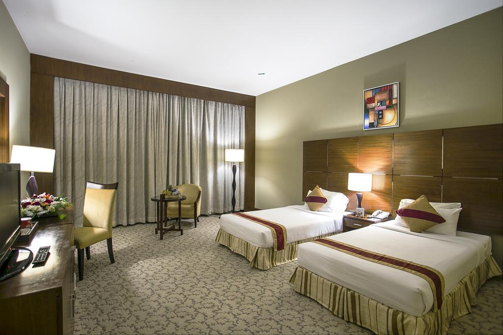

Nazimgarh Garden Resort
ITEM DESCRIPTION
Nazimgarh Resorts is everything a resort should be.
Set on six acres of landscaped hillside on the outskirts of Sylhet City,
it is a self contained island of tranquility amidst lush green foliage.
-------------------------------------
Room Rate-
Premier Room-BDT 10750
Deluxe-BDT 14550
Executive-BDT 15810
Executive Plus-BDT 18340
Luxury Suite-BDT 24030
Presidential Suite-BDT 30000
Hotel Supreme
HOTEL AMENITIES:
Free Parking
Breakfast included
Meeting Rooms
Business Center with Internet Access
Banquet Room
Multilingual Staff
Conference Facilities
Children Activities (Kid / Family Friendly)
Room Service
Airport Transportation
Breakfast Available
Nirvana Inn
Showcasing a playground and terrace, Nirvana Inn is located in Sylhet. Guests can enjoy the on-site restaurant. Free private parking is available on site.
A flat-screen TV with satellite channels and Nintendo Wii, as well as an iPad are provided. Certain units have a sitting area where you can relax. Certain rooms feature views of the mountains or garden. For your comfort, you will find slippers and a hairdryer. Superior rooms include a sauna or a hot tub.
There is a 24-hour front desk and hairdresser's at the property.
You can play ping-pong at this hotel, and bike rental and car rental are available.
This property also has one of the top-rated locations in Sylhet! Guests are happier about it compared to other properties in the area.
Couples in particular like the location – they rated it 8.2 for a two-person trip.
This property is also rated for the best value in Sylhet! Guests are getting more for their money when compared to other properties in this city.

Rose View Hotel
Featuring free WiFi throughout the property, Rose View Hotel offers accommodations in Sylhet. Guests can enjoy the on-site restaurant. Free private parking is available on site.
Some accommodations feature a private bathroom with a spa tub, and others have slippers and free toiletries. Some rooms have a sitting area for your convenience. A flat-screen TV is available.
There is a hairdresser's at the property.
You can play ping-pong at the hotel. The hotel also provides car rental.